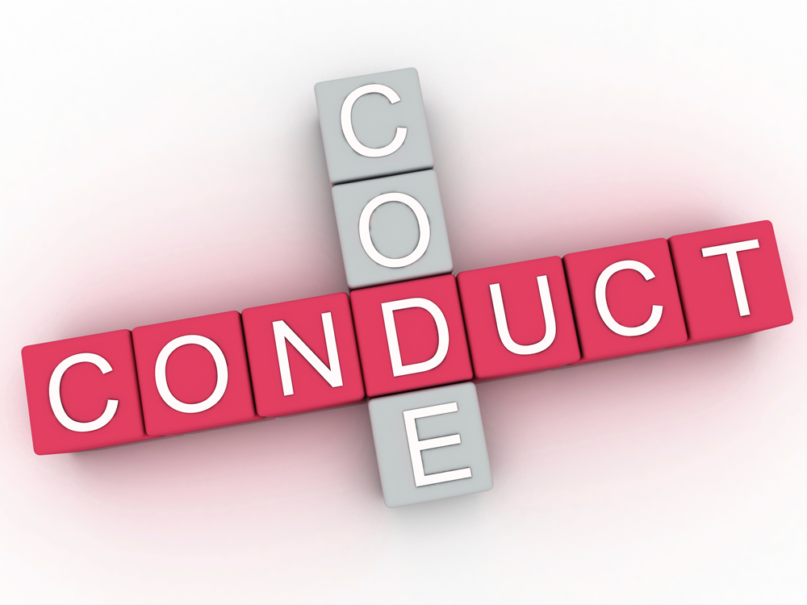

Code of Conduct
In order to provide a school environment that fosters cooperation, responsibility and respect; children will be expected to follow these guidelines:
-
Students will support a good learning environment. Children are expected to do their best and cooperate with teachers and classmates. This includes, but is not limited to, quietly focusing their attention on the teacher when asked to do so, completing class assignments, observing class starting and ending times, completing classroom chores, and lining up promptly and quietly when requested to do so.
-
Students will treat all adults and children with respect. Respectful, courteous language is expected towards teachers, children and parents. Inappropriate behavior such as rudeness, teasing, mimicking, unkind or inappropriate words, swearing, physical or emotional threats, sexual harassment, and lying are not permitted. Students are expected to comply whenever an adult or a child asks for an inappropriate behavior to stop.
-
Students will treat all personal and school property with respect. Lost, stolen, defaced or destroyed property will be repaired or replaced by the parents of those responsible.
-
A “gentle hands” policy will be followed. Rough housing, fighting, shoving, spitting, pushing, hitting, kicking or biting is cause for immediate intervention.
-
Students will obey all classroom and playground rules. Teachers will help their students understand and integrate the school-wide behavior policy into their daily activities. Additionally, individual teachers may have unique expectations, which they will communicate to their classes. Teachers will develop a class management system, approved by the administrator, and appropriate to the age level of their individual class.
-
Students should extend respect to their peers even when not at school. Off-campus student conduct (such as romantic relationships, bullying, and cyber bullying) that causes a disruption to the learning environment may be subject to intervention from teachers and administrators.